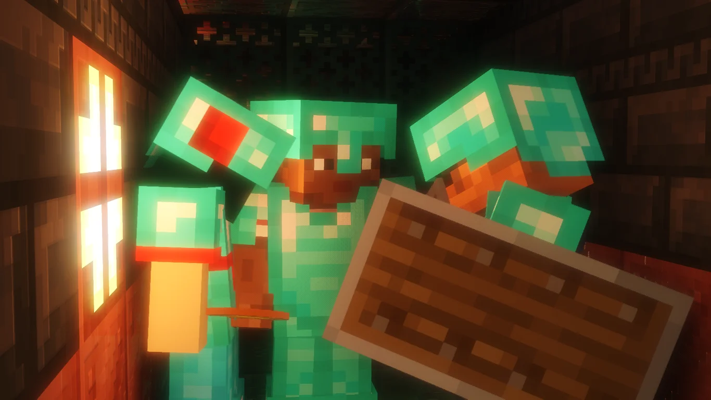
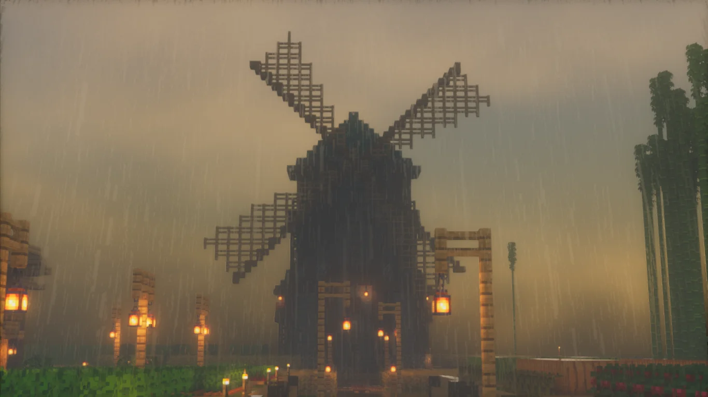
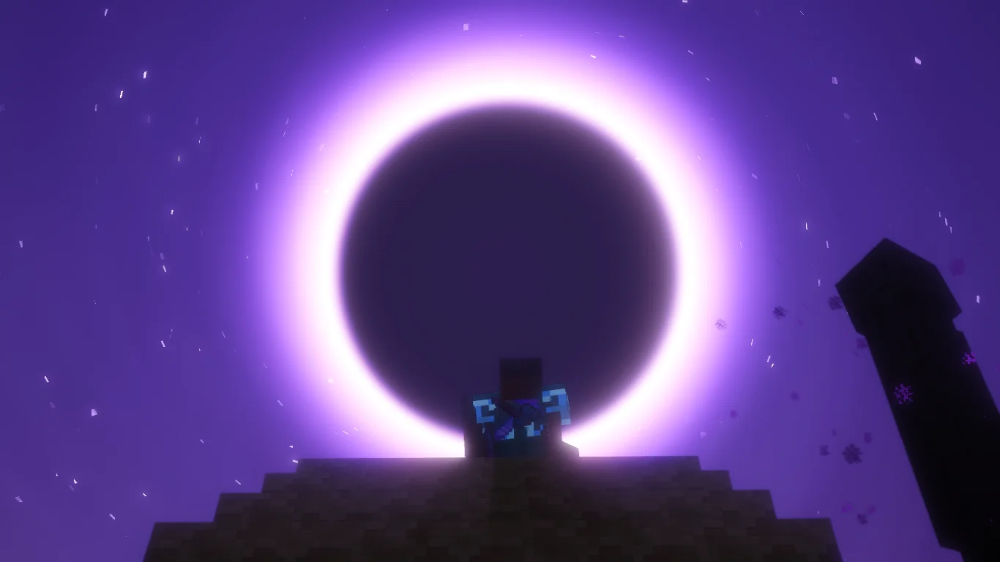
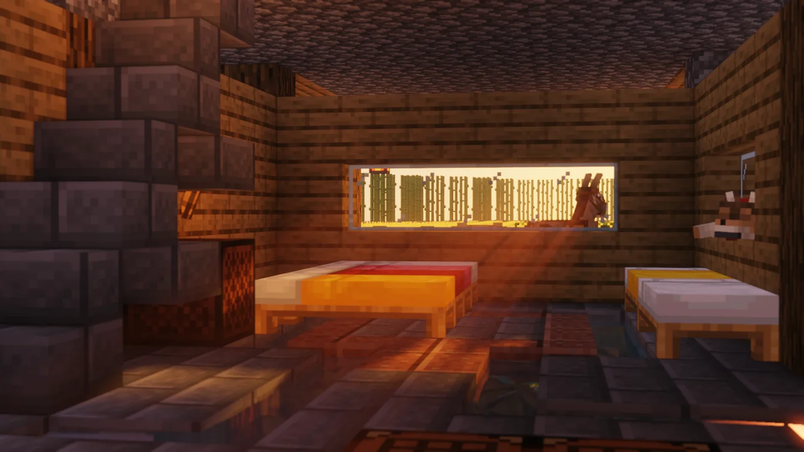
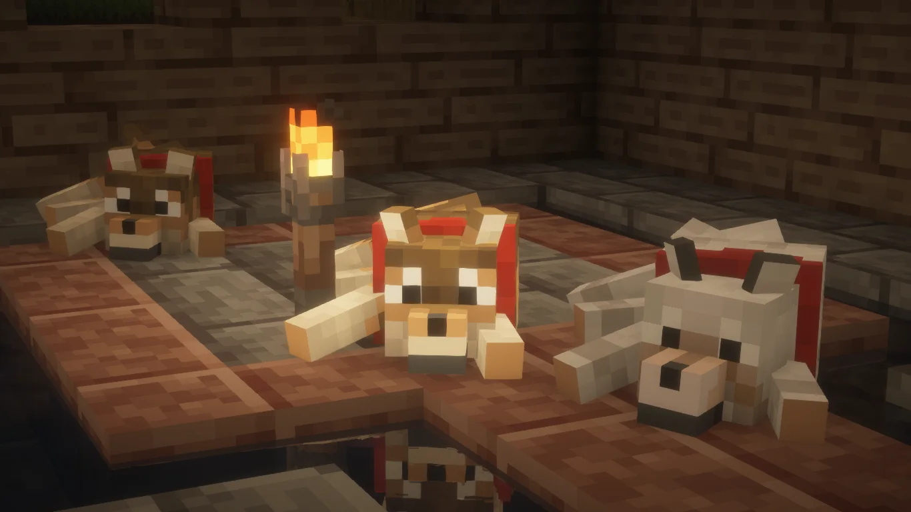
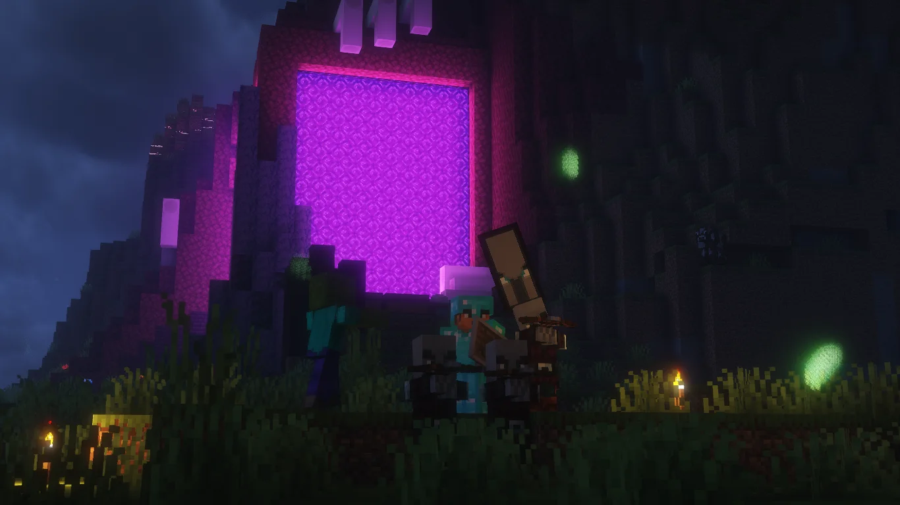

bluezex
Halo ges! Saya Samuel, biasa dipanggil Semi atau Sem. Di sini kalian bisa ngintip project gue. Tapi gapapa, progress is progress, walau pun sedikit 😅 Enjoyin aja yaa liat-liatnya 😎
PROJECT
VALAKRA
A Minecraft Server






CONTACT
Feel free to reach out me via social media.